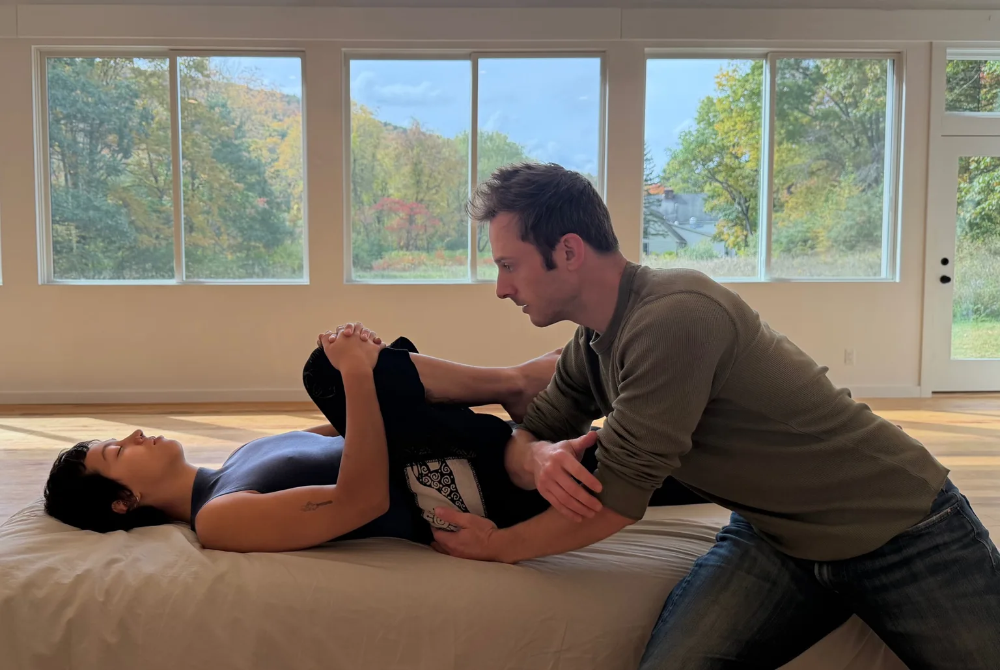
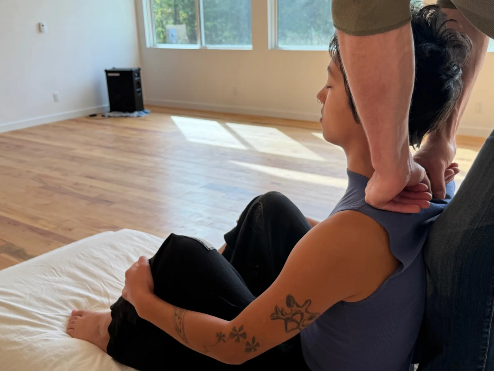
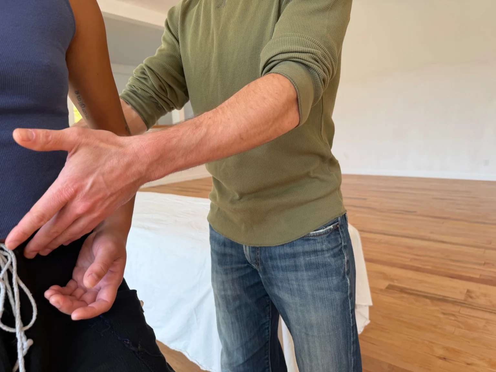

One-to-one work
Bodywork
I work with your body, not on it.
Structural Integration and Sensory Repatterning, woven together through fifteen years of practice.

“His hands have a knack for finding what’s happening under the surface, and his gently powerful physical guidance consistently leaves me feeling more stable and balanced in my body.”
Structural Integration
A more dynamic, harmonious relationship with gravity.
Developed by Ida Rolf as a ten-session series, Structural Integration helps your joints and movements coordinate with more grace, ease, pleasure and power.
I work with the body’s natural inclination toward what feels good. It’s a kinesthetic re-education, for a more satisfying and joyful experience of embodiment.

Sensory Repatterning
An invitation to let go of habitual holding.
A gentle practice that uses rhythmic, wave-like motions and slow range-of-motion explorations to “talk” to the body with passive movement, inviting it to let go of its chronic tensions and holding patterns.
Since it reveals unconscious tensions and entices their release, you can think of it as deep relaxation training.

In clients’ words.
“His combination of thoughtful touch and instruction has been instrumental in recovering after hard weeks at work, for both my body and mind.”
“Throughout, I did not feel worked ‘on,’ I felt worked ‘with.’”